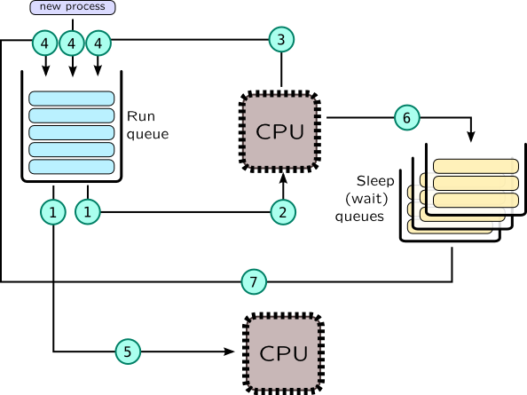
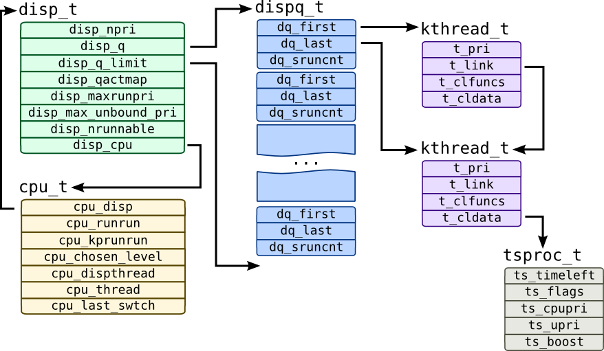
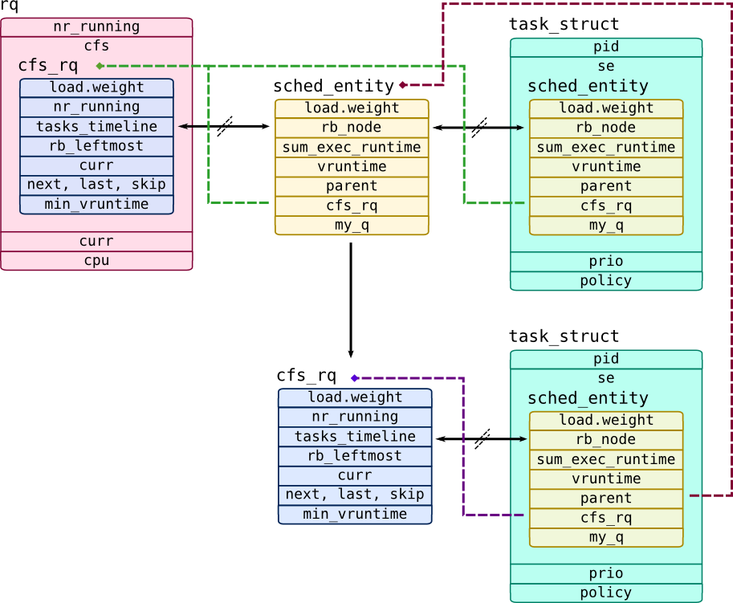

Process scheduler
Definitioncurrent/curthread pointer so when mode switched back to userspace, new task will be picked with appropriate address space and registers values. If context switches are rare, that can cause task starvation and user can notice that system become unresponsive, of context switches are too often, TLB will be cleared too often, caches will be cold, so performance will degrade, so picking an optimal timeslice allocated to a task is a hard choice.
In Solaris functions of the scheduler is invoked through swtch() function, in Linux through schedule() functions and set of derivatives like cond_resched().
Process lifetime in terms of the scheduler is shown on the following picture.

In scheduler, context switching may be split in two steps:
-
Current task leaves CPU. This event is traceable as
sched:::off-cpuin DTrace orscheduler.cpu_offin SystemTap. This may be caused by many reasons:
-
Task was blocked on kernel synchronisation object (6), for example due to call to
poll()and waiting network data. In this case task is put into sleep queue related to that synchronisation object. It would later be unblocked by another task (7), thus being put back to run-queue.
-
Task is voluntary gives control to a scheduler by calling
yield()call (3) -
Task has been exhausted its timeslice or task with higher priority has been added to a run queue (or a new, forked process added to queue), which is called preemptiveness. Usually timeslice is checked by system timer, which is traceable as
sched:::tickprobe in DTrace orscheduler.tick. (3) Some system calls and interrupts may also trigger context switch.
-
New task is picked to be run on CPU (2). When CPU resumes from kernel mode, interrupt or system call, it changes context to a new task, like in
resume()low-level routine of Solaris.
Context switch may be traced in SystemTap withscheduler.ctxswitchprobe.
OS creates at least one run-queue per CPU in SMP systems. When some CPU prepares to become idle, it may check run-queues of other CPUs and steal task from it, thus task migrates(5) between CPUs. This allows to balance tasks across CPUs, but other factors like NUMA locality of process memory, cache hotness should be taken into account. Migration may be tracked by with scheduler.migrate probe in SystemTap. DTrace doesn't provide special probe for that, but it may be tracked comparing CPU ids in on-cpu and off-cpu probes:
# dtrace -n '
sched:::off-cpu {
self->cpu = cpu; }
sched:::on-cpu
/self->cpu != cpu/
{
/* Migration */ } '
Usually task is blocked on various synchronisation objects waiting for data available for processing, i.e. accept() will block until client will connect and recv() will block until client will send new data. There is no need to use a processor when no data is available, so task simply leaves CPU and being put to a special sleep queue related to that object. Speaking of accept() call, it would be so_acceptq_cv condition variable in kernel socket object (sonode) in Solaris and sk_wq wait queue wrapper in Linux object sock. We will cover synchronisation objects in detail later in section Synchronisation objects.
Solaris has dedicated probes for sleeping and awoken processes: sched:::sleep and sched:::wakeup correspondingly which may be used like this:
# dtrace -n '
sched:::sleep {
printf("%s[%d] sleeping", execname, pid);
}
sched:::wakeup {
printf("%s[%d] wakes up %s[%d]", execname, pid,
args[1]->pr_fname, args[1]->pr_pid); }' | grep cat
Note that wakeup process is called in context of process which initiates task unblocking.
SystemTap provides scheduler.wakeup probe for process that return to a run-queue, but has no special probe for sleeping process. The most correct way to do that is to trace schedule() calls and task state transitions: task should change its state from TASK_RUNNING to a TASK_INTERRUPTIBLE or TASK_UNINTERRUPTIBLE. In following example, however, we will use much simpler approach: most sleep queues are implemented as wait queues in Linux, so we will trace corresponding call, add_wait_queue() that puts task onto queue:
# stap -e '
probe kernel.function("add_wait_queue") {
printf("%s[%d] sleeping\n", execname(), pid());
}
probe scheduler.wakeup {
printf("%s[%d] wakes up %s[%d]\n", execname(), pid(),
pid2execname(task_pid), task_pid); }' | grep cat
These examples may be tested with the following simple one-liner:
# bash -c 'while : ; do echo e ; sleep 0.5 ; done ' | cat
When dispatcher puts task onto queue, it is called enqueuing(4), when it removes it from queue, it is called dequeuing(1). DTrace has probes sched:::enqueue and sched:::dequeue. SystemTap doesn't have these probes, but you may trace enqueue_task() and dequeue_task() for that.
As we mentioned before, purpose of the scheduler is to distribute time between tasks. To do that, it prioritizes tasks, so to pick a task for execution it may create multiple queues (one for each priority level), than walk over these queues and pick first task with top-level priority. Such approach is called cyclic planning. Fair planning, on contrary, is concerned about time consumption by difference threads, processes, users and even services (which are all considered as scheduling entities), and try to balance available processor time fairly.
Scheduling in Solaris
Solaris implements cyclic scheduling, but it support fair scheduling algorithms via FSS (fair share scheduling) class. Each thread in Solaris may have priority from 0 to 170 which is saved in t_pri field of kthread_t. Each thread has its own scheduler class, which may have different algorithms for allocating timeslices, prioritizing threads. Generic API for scheduler class is provided as t_clfuncs field of thread where each field is a pointer to a corresponding function, while specific scheduler data is kept under t_cldata field.
The following table shows scheduler classes implemented in Solaris.
| Class | Priority range | Description |
| - | 160-169 | Interrupt threads (they are not handled by scheduler explicitly). |
| RT | 100-159 | RealTime processes and threads. |
| SYS | 60-99 | SYStem -- for kernel threads which always have precedence over user processes. Also, timeslices are allocated to them, they consume as much processor time as they can. |
| SYSDC | 0-99 | SYStem Duty Cycles -- for CPU-bound kernel threads like ZFS pipeline (which involves encryption and compression). This class is implemented to prevent userspace starvation under heavy I/O load. |
| TS and IA | 0-59 | Time Sharing and InterActive -- default classes for userspace processes. TS class has dynamic priorities: if thread had consumed entire timeslice, its priority is reduced to give room to other threads. IA is a modification of TS class which also adds small "boost" (usually, 10 priorities) for processes which have focused window (useful for graphics stations). |
| FX | 0-59 | FiXed -- unlike TS/IA, such processes never change their priorities unless it is done by user themself. |
| FSS | 0-59 | Fair Share Scheduler -- allows to distribute processor time proportionally between groups of processes such as zones or projects. |
Solaris dispatcher control structures are shown on the following picture:

Each processor has corresponding cpu_t structure, which includes two pointers to threads: cpu_dispthread -- a thread chosen by scheduler to be the next process after resume, and cpu_thread -- process which is currently is on CPU. cpu_last_swtch contains time of last context switch in lbolts (changed into high-resolution time in nanoseconds in Solaris 11). Each cpu_t has dispatcher queue represented by disp_t structure and corresponding array of queue heads of type dispq_t. Each queue head has links to first and last thread in queue (kthread_t objects are linked through t_link pointer) and dq_sruncnt -- number of threads in this queue.
disp_t refers queues through disp_q pointer which refers first queue with priority 0 and disp_q_limit which points one entry beyound array of dispatcher queues. disp_qactmap contains bitmap of queues that have active processes at the moment. disp_npri is the number of priorities serviced by this dispatcher object -- it should be 160. disp_maxrunpri contains maximum priority of a thread in this dispatcher object -- it will be top-most queue which has active processes and when thread will be switched, this queue will be checked first. disp_max_unbound_pri also contains maximum priority of a thread, but only for a thread that is not bound to a corresponding processor and thus may be considered a candidate for task-stealing by free CPUs. Finally, disp_nrunnable has total number of runnable threads which is serviced by this dispatcher object.
hrtime_t type for cpu_last_swtch (high-resolution unscaled time).
By default Solaris userspace processes use TS scheduler, so let's look into it. Key parameter that used in it is ts_timeleft which keeps remaining thread timeslice. Initial value of ts_timeleft is taken from table ts_dptbl from field ts_quantum. Each row in that table matches priority level, so processes with lower priorities will have larger quantums (because they will get CPU rarely). You can check that table and override its values with dispadmin command, for example:
# dispadmin -c TS -g
Priority is also set dynamically in TS scheduler: if thread will exhaust its timeslice, its priority will be lowered according to ts_tqexp field, and if it will be awaken after sleep, it will get ts_slpret priority. Modern Solaris systems were replaced ts_timeleft with ts_timer (for non-kernel threads those have TSKPRI flag is set).
Tracer for TS scheduler is available in the following listing:
#!/usr/sbin/dtrace -qCs
/**
tstrace.d - traces Solaris dispatcher (and prints some TS information)
Usage: tstrace.d
Note: Use -DSOLARIS10 on Solaris 10
Tested on Solaris 11.2
*/
string classnames[struct thread_ops*];
int disp_spec;
int disp_commit;
/* Converts time from t_disp_time/cpu_last_swtch to nanoseconds
- Solaris 10 uses system ticks (lbolts)
- Solaris 11 uses unscaled hrtime_t
HRT_CONVERT converts unscaled time to nanoseconds
HRT_DELTA substracts system time from its argument */
#ifdef SOLARIS10
# define HRT_DELTA(ns) (`nsec_per_tick * (`lbolt64 - (ns)))
#else
# define __HRT_CONVERT(ts) \
(((ts >> (32 - NSEC_SHIFT)) * NSEC_SCALE) + \
((((ts << NSEC_SHIFT) & 0xFFFFFFFF) * NSEC_SCALE) >> 32))
# if defined(__i386) || defined(__amd64)
# define NSEC_SHIFT 5
# define NSEC_SCALE `hrt->nsec_scale
# define HRT_CONVERT(ts) \
((`tsc_gethrtime_enable) ? __HRT_CONVERT(ts) : ts )
# elif defined(__sparc)
# define NANOSEC 1000000000
# define NSEC_SHIFT 4
# define NSEC_SCALE \
((uint64_t)((NANOSEC << (32 - NSEC_SHIFT)) / `sys_tick_freq) & ~1)
# define HRT_CONVERT __HRT_CONVERT
# endif
# define HRT_DELTA(ns) ((timestamp > HRT_CONVERT(ns)) ? timestamp - HRT_CONVERT(ns) : 0)
#endif
#define TSINFO(t) ((tsproc_t*) (t->t_cldata))
#define KTHREAD(t) ((kthread_t*) (t))
#define KTHREADCPU(t) ((kthread_t*) (t))->t_cpu->cpu_id
#define PSINFO(thread) xlate(thread->t_procp)
#define TSKPRI 0x01
#define TSBACKQ 0x02
#define TSIA 0x04
/* We ignore TSIA* flags here */
#define TSRESTORE 0x20
/* TSFLAGSSTR creates string represenation for TS flags */
#define TSFLAGS(t) (TSINFO(t)->ts_flags)
#define TSFLAGSSTR(t) \
strjoin( \
strjoin( \
(TSFLAGS(t) & TSKPRI) ? "TSKPRI|" : "", \
(TSFLAGS(t) & TSBACKQ) ? "TSBACKQ|" : ""), \
strjoin( \
(TSFLAGS(t) & TSIA) ? "TSIA|" : "", \
(TSFLAGS(t) & TSRESTORE) ? "TSRESTORE" : ""))
/* Returns true value if thread belongs to TS or IA class */
#define ISTSTHREAD(t) \
((t->t_clfuncs == &`ts_classfuncs.thread) || \
(t->t_clfuncs == &`ia_classfuncs.thread))
#define TCLNAME(t_clfuncs) classnames[t_clfuncs]
#define DUMP_KTHREAD_INFO(hdr, thread) \
printf("\t%s t: %p %s[%d]/%d %s pri: %d\n", hdr, thread, \
PSINFO(thread)->pr_fname, PSINFO(thread)->pr_pid, thread->t_tid, \
TCLNAME(thread->t_clfuncs), thread->t_pri)
#define DUMP_DISP_INFO(disp) \
printf("\tDISP: nrun: %d npri: %d max: %d(%d)\n", \
(disp)->disp_nrunnable, (disp)->disp_npri, \
(disp)->disp_maxrunpri, (disp)->disp_max_unbound_pri) \
#define DUMP_CPU_INFO(cpup) \
this->delta = HRT_DELTA((cpup)->cpu_last_swtch); \
printf("\tCPU : last switch: T-%dus rr: %d kprr: %d\n", \
this->delta / 1000, (cpup)->cpu_runrun, (cpup)->cpu_kprunrun); \
DUMP_KTHREAD_INFO("\tcurrent", (cpup)->cpu_thread); \
DUMP_KTHREAD_INFO("\tdisp ", (cpup)->cpu_dispthread); \
DUMP_DISP_INFO(cpup->cpu_disp)
#define TS_QUANTUM_LEFT(tspp) \
((tspp)->ts_flags & TSKPRI) \
? (tspp)->ts_timeleft \
: (tspp)->ts_timer - (tspp)->ts_lwp->lwp_ac.ac_clock
#define DUMP_TSPROC_INFO(thread) \
printf("\tTS: timeleft: %d flags: %s cpupri: %d upri: %d boost: %d => %d\n", \
TS_QUANTUM_LEFT(TSINFO(thread)), TSFLAGSSTR(thread), \
TSINFO(thread)->ts_cpupri, TSINFO(thread)->ts_upri, \
TSINFO(thread)->ts_boost, TSINFO(thread)->ts_scpri )
BEGIN {
printf("Tracing CPU%d...\n", $1);
classnames[&`ts_classfuncs.thread] = "TS";
classnames[&`ia_classfuncs.thread] = "IA";
classnames[&`sys_classfuncs.thread] = "SYS";
classnames[&`fx_classfuncs.thread] = "FX";
/* classnames[&`rt_classfuncs.thread] = "RT"; */
classnames[&`sysdc_classfuncs.thread] = "SDC";
}
/* Helper functions tracer
cpu_surrender - called when thread leaves CPU
setbackdq - called when thread is put onto queue tail
setfrontdq - called when thread is put onto disp queue head */
fbt::cpu_surrender:entry
/cpu == $1/ {
DUMP_KTHREAD_INFO("cpu_surrender", KTHREAD(arg0));
}
fbt::set*dq:entry
/KTHREADCPU(arg0) == $1 && ISTSTHREAD(KTHREAD(arg0))/ {
printf("=> %s \n", probefunc);
DUMP_KTHREAD_INFO(probefunc, KTHREAD(arg0));
DUMP_TSPROC_INFO(KTHREAD(arg0));
}
/* Man dispatcher function disp(). Uses speculations so only when
TS thread moves onto CPU or/and leaves it, data will be printed. */
fbt::disp:entry
/cpu == $1/ {
disp_spec = speculation();
disp_commit = 0;
speculate(disp_spec);
printf("=> disp \n");
DUMP_CPU_INFO(`cpu[$1]);
}
fbt::disp:entry
/cpu == $1/ {
speculate(disp_spec); DUMP_KTHREAD_INFO("curthread: ", curthread);
}
fbt::disp:entry
/cpu == $1 && ISTSTHREAD(curthread)/ {
speculate(disp_spec); DUMP_TSPROC_INFO(curthread);
disp_commit = 1;
}
fbt::disp:return
/cpu == $1/ {
speculate(disp_spec); DUMP_KTHREAD_INFO("disp", KTHREAD(arg1));
}
fbt::disp:return
/cpu == $1 && ISTSTHREAD(KTHREAD(arg1))/ {
speculate(disp_spec); DUMP_TSPROC_INFO(KTHREAD(arg1));
disp_commit = 1;
}
fbt::disp:return
/cpu == $1 && disp_commit/ {
commit(disp_spec);
}
fbt::disp:return
/cpu == $1 && !disp_commit/ {
discard(disp_spec);
}
/* System tick function clock_tick -- reflects changes in
thread and CPU parameters after tick */
sched:::tick
/cpu == $1 && ISTSTHREAD(KTHREAD(arg0))/ {
printf("=> clock_tick \n");
DUMP_CPU_INFO(`cpu[$1]);
DUMP_KTHREAD_INFO("clock_tick", KTHREAD(arg0));
DUMP_TSPROC_INFO(KTHREAD(arg0));
}
/* Trace for wakeups -- traces awoken thread */
sched:::wakeup
/KTHREADCPU(arg0) == $1 && ISTSTHREAD(KTHREAD(arg0))/ {
printf("=> %s [wakeup] \n", probefunc);
DUMP_CPU_INFO(`cpu[$1]);
DUMP_KTHREAD_INFO("wakeup", KTHREAD(arg0));
DUMP_TSPROC_INFO(KTHREAD(arg0));
}
Let's demonstrate some of TS features live. To do that we will conduct two TSLoad experiments: duality and concurrency. In first experiment, duality, we will create two different types of threads: workers which will occupy all available processor resources, while manager will rarely wakeup (i.e. to queue some work possibly and report to user), so it should be immediately dispatched. In our example manager had LWPID=7 while worker had LWPID=5. Experiment configuration is shown in the following file:
{
"name": "duality",
"steps": {
"manager": {
"num_steps": 20,
"num_requests": 20,
},
"worker": {
"num_steps": 20,
"num_requests": 20,
}
},
"threadpools": {
"tp_manager": {
"num_threads": 1,
"quantum": 1000000000,
"disp": {
"type": "round-robin"
},
"sched" : [
{ "wid": 0,
"objects": ["strand:0:0:0"] }
]
},
"tp_worker": {
"num_threads": 1,
"quantum": 1000000000,
"disp": {
"type": "benchmark"
},
"sched" : [
{ "wid": 0,
"objects": ["strand:0:0:0"] }
]
}
},
"workloads" : {
"manager": {
"wltype": "busy_wait",
"threadpool": "tp_manager",
"rqsched": {
"type": "iat",
"distribution": "exponential"
},
"params": { "num_cycles": 800000 }
},
"worker": {
"wltype": "busy_wait",
"threadpool": "tp_worker",
"rqsched": { "type": "simple" },
"params": { "num_cycles": 4000000 }
}
}
}
Here is sample output for duality experiment (some output was omitted):
=> cv_unsleep [wakeup]
CPU : last switch: T-50073us rr: 0 kprr: 0
wakeup t: ffffc100054f13e0 tsexperiment[1422]/7 TS pri: 59
=> setbackdq
setbackdq t: ffffc100054f13e0 tsexperiment[1422]/7 TS pri: 59
=> setfrontdq
setfrontdq t: ffffc10005e90ba0 tsexperiment[1422]/5 TS pri: 0
=> disp
CPU : last switch: T-50140us rr: 1 kprr: 0
current t: ffffc10005e90ba0 tsexperiment[1422]/5 TS pri: 0
disp t: ffffc10005e90ba0 tsexperiment[1422]/5 TS pri: 0
DISP: nrun: 2 npri: 170 max: 59(65535)
curthread: t: ffffc10005e90ba0 tsexperiment[1422]/5 TS pri: 0
TS: timeleft: 19 flags: cpupri: 0 upri: 0 boost: 0 => 0
disp t: ffffc100054f13e0 tsexperiment[1422]/7 TS pri: 59
TS: timeleft: 3 flags: cpupri: 59 upri: 0 boost: 0 => 0
=> disp
CPU : last switch: T-1804us rr: 0 kprr: 0
current t: ffffc100054f13e0 tsexperiment[1422]/7 TS pri: 59
disp t: ffffc100054f13e0 tsexperiment[1422]/7 TS pri: 59
DISP: nrun: 1 npri: 170 max: 0(65535)
curthread: t: ffffc100054f13e0 tsexperiment[1422]/7 TS pri: 59
disp t: ffffc10005e90ba0 tsexperiment[1422]/5 TS pri: 0
Note that when manager wokes up, it has maximum priority: 59 but being put to the queue tail. After that worker thread is being queued because cpu_runrun flag is being set (note rr change), number of runnable processes increases up to two. After 1.8 ms manager surrenders from CPU, and worker regains control of it.
In the concurrency experiment, on the opposite we will have two threads with equal rights: they both will occupy as much CPU as they can get thus being worker processes. Experiment configuration is shown in the following file:
{
"name": "concurrency",
"steps": {
"worker": {
"num_steps": 20,
"num_requests": 40,
}
},
"threadpools": {
"tp_worker": {
"num_threads": 2,
"quantum": 1000000000,
"disp": {
"type": "benchmark"
},
"sched" : [
{ "wid": "all",
"objects": ["strand:0:0:0"] }
]
}
},
"workloads" : {
"worker": {
"wltype": "busy_wait",
"threadpool": "tp_worker",
"rqsched": { "type": "simple" },
"params": { "num_cycles": 4000000 }
}
}
}
Here is sample output for concurrency experiment (some output was omitted):
=> disp
CPU : last switch: T-39971us rr: 1 kprr: 0
current t: ffffc10009711800 tsexperiment[1391]/6 TS pri: 40
disp t: ffffc10009711800 tsexperiment[1391]/6 TS pri: 40
DISP: nrun: 2 npri: 170 max: 40(65535)
curthread: t: ffffc10009711800 tsexperiment[1391]/6 TS pri: 40
TS: timeleft: 4 flags: cpupri: 40 upri: 0 boost: 0 => 0
disp t: ffffc10005c07420 tsexperiment[1391]/5 TS pri: 40
TS: timeleft: 4 flags: cpupri: 40 upri: 0 boost: 0 => 0
=> clock_tick
clock_tick t: ffffc10005c07420 tsexperiment[1391]/5 TS pri: 40
TS: timeleft: 3 flags: cpupri: 40 upri: 0 boost: 0 => 0
=> clock_tick
clock_tick t: ffffc10005c07420 tsexperiment[1391]/5 TS pri: 40
TS: timeleft: 2 flags: cpupri: 40 upri: 0 boost: 0 => 0
=> clock_tick
clock_tick t: ffffc10005c07420 tsexperiment[1391]/5 TS pri: 40
TS: timeleft: 1 flags: cpupri: 40 upri: 0 boost: 0 => 0
cpu_surrender t: ffffc10005c07420 tsexperiment[1391]/5 TS pri: 30
=> clock_tick
clock_tick t: ffffc10005c07420 tsexperiment[1391]/5 TS pri: 30
TS: timeleft: 0 flags: TSBACKQ| cpupri: 30 upri: 0 boost: 0 => 0
=> setbackdq
setbackdq t: ffffc10005c07420 tsexperiment[1391]/5 TS pri: 30
TS: timeleft: 8 flags: cpupri: 30 upri: 0 boost: 0 => 0
=> disp
curthread: t: ffffc10005c07420 tsexperiment[1391]/5 TS pri: 30
TS: timeleft: 8 flags: cpupri: 30 upri: 0 boost: 0 => 0
disp t: fffffffc80389c00 sched[0]/0 SYS pri: 60
=> disp
curthread: t: fffffffc80389c00 sched[0]/0 SYS pri: 60
disp t: ffffc10009711800 tsexperiment[1391]/6 TS pri: 40
TS: timeleft: 4 flags: cpupri: 40 upri: 0 boost: 0 => 0
Note how timeleft field is changing: it is calculated as ts_timer - ts_lwp->lwp_ac.ac_clock. After each clock tick latter is incremented thus timeleft is decrementing. When timeleft becomes 0, it means that worker has exhausted scheduler quantum, so its priority falls from 40 to 30 and it is being put to the tail of corresponding dispatcher queue. After that sched thread runs for a short time (which is some kernel thread managed by SYS scheduler), and eventually another worker thread gets on CPU.
Scheduling in Linux
Cyclic scheduling was implemented in Linux O(1) scheduler, but it was replaced with Completely Fair Scheduler (CFS) scheduler in 2.6.22 kernel. Cyclic scheduling is represented by RT class which is rarely used. There are also some non-default schedulers like BFS which are not available in vanilla kernel but shipped as separate patches. Each task_struct has field policy which determines which scheduler class will be used for it. Policies are shown in the following table:
| Priority | Class | Policy | Description |
| 1 | stop | - | Special class for stopped CPUs. Such CPUs cannot execute any threads. |
| 2 | rt |
SCHED_RR |
Implements cyclic scheduling using round-robin or FIFO policies |
SCHED_FIFO |
|||
| 3 | fair (CFS) |
SCHED_NORMAL (SCHED_OTHER) |
Default policy for most kernel and user threads |
SCHED_BATCH |
Similar to SCHED_NORMAL, but process which was recently waken up won't try to dispatch on CPU which is more fittful for batch tasks |
||
| 4 | idle |
SCHED_IDLE |
Idle threads -- picked only when other classes do not have runnbalbe threads. |
make -j8 and another user, say myaut, had run make -j4. To maintain fairness so users dima and myaut will get equal amount of CPU time, you will need renice processes of user dima, but calculating correct priority penalty will be inobvious. Instead, you can create a two CGroups and add one instance of make per CGroup. Than all tasks which are spawned by dima's make will be accounted in scheduler entity corresponding to dima's CGroup.
Let's look into details of implementation of CFS scheduler. First of all, it doesn't deal with tasks directly, but schedules scheduler entities of type struct sched_entity. Such entity may represent a task or a queue of entities of type struct cfs_rq (which is referenced by field my_q), thus allowing to build hierarchies of entities and allocate resources to task groups which are called CGroups in Linux. Processor run queue is represented by type struct rq contains field cfs which is instance of struct cfs_rq and contains queue of all high-level entities. Each entity has cfs_rq pointer which points to CFS runqueue to which that entity belongs:

In this example processor run queue has two scheduler entities: one CFS queue with single task (which refers top-level cfs_rq through parent pointer) in it and one top-level task.
CFS doesn't allocate timeslices like TS scheduler from Solaris did. Instead it accounts total time which task had spend on CPU and saves it to sum_exec_runtime field. When task is dispatched onto CPU, its sum_exec_runtime saved into prev_sum_exec_runtime, so calculating their difference will give time period that task spent on CPU since last dispatch. sum_exec_runtime is expressed in nanoseconds but it is not directly used to measure task's runtime. To implement priorities, CFS uses task weight (in field load.weight) and divides runtime by tasks weight, so tasks with higher weights will advance their runtime meter (saved into vruntime field) slower. Tasks are sorted according their vruntime in a red-black tree called tasks_timeline, while left-most task which has lowest vruntime of all tasks and saved into rb_leftmost.
CFS has special case for tasks that have been woken up. Because they can be sleeping too long, their vruntime may be too low and they will get unfairly high amount of CPU time. To prevent this, CFS keeps minimum possible vruntime of all tasks in min_vruntime field, so all waking up tasks will get min_vruntime minus a predefined "timeslice" value. CFS also have a scheduler buddies -- helper pointers for a dispatcher: next -- task that was recently awoken, last -- task that recently was evicted from CPU and skip -- task that called sched_yield() giving CPU to other entities.
So, let's implement a tracer for CFS scheduler:
#!/usr/bin/env stap
/**
* cfstrace.stp
*
* Traces context switching by CFS scheduler
* Usage:
* сfstrace.stp CPU
*
* Tested on Linux 3.10 (CentOS 7)
*/
/* Global parameters */
global be_verbose = 1;
global print_cfs_tree = 1;
global pnetime;
global cpetrace;
global trace_cpu;
global policy_names;
global cpu_cfs_rq;
global rq_curr;
global rq_clock_task;
/* get_task_se returns task_struct corresponding to scheduler entity se*/
function get_task_se:long(se:long) {
offset = &@cast(0, "struct task_struct")->se;
return se - offset;
}
/* get_task_se returns sched_entity for task */
function get_se_task:long(task:long) {
offset = &@cast(0, "struct task_struct")->se;
return task + offset;
}
/* get_rb_se returns sched_entity for red-black node */
function get_rb_se:long(rb:long) {
offset = &@cast(0, "struct sched_entity")->run_node;
return rb - offset;
}
/* formats pretty string for task_struct t */
function sprint_task(t:long) {
policy = @cast(t, "struct task_struct")->policy;
return sprintf("t: %p %s/%d %s", t, task_execname(t), task_tid(t),
policy_names[policy]);
}
/* Generates CGroup or autogrou path for CFS run-queue */
function sprint_cfs_rq_path(cfs_rq:long) {
tg = @cast(cfs_rq, "struct cfs_rq")->tg;
if(!tg)
return "???";
%( CONFIG_SCHED_AUTOGROUP == "y"
%?
if(@cast(tg, "struct task_group")->autogroup) {
return sprintf("/autogroup-%d",
@cast(tg, "struct task_group")->autogroup->id);
}
%)
cgroup = @cast(tg, "struct task_group")->css->cgroup;
try {
return reverse_path_walk(@cast(cgroup, "struct cgroup")->dentry);
}
catch {
return "/???";
}
}
/* formats relative representation of vruntime */
function sprint_vruntime(se:long, min_vruntime:long) {
vruntime = @cast(se, "struct sched_entity")->vruntime;
if(min_vruntime)
return sprintf("MIN+%d", vruntime - min_vruntime);
else
return sprintf("%d", vruntime);
}
/* Prints information about sched_entity se */
function print_se(s:string, se:long, verbose:long, min_vruntime:long) {
printf("\tse:%8s ", s);
my_q = @cast(se, "struct sched_entity")->my_q;
if(my_q == 0) {
println(sprint_task(get_task_se(se)));
} else {
printf("se: %p my_q: %p %s", se, my_q, sprint_cfs_rq_path(my_q));
}
if(verbose) {
printf("\t\tload.weight: %d exec_start: RQ+%d vruntime: %s sum_exec_runtime: %d\n",
@cast(se, "struct sched_entity")->load->weight,
rq_clock_task - @cast(se, "struct sched_entity")->exec_start,
sprint_vruntime(se, min_vruntime),
@cast(se, "struct sched_entity")->sum_exec_runtime);
}
}
/* Prints information about cfs_rq run-queue */
function print_cfs_rq(cfs_rq:long, verbose:long) {
firstrb = @cast(cfs_rq, "struct cfs_rq")->rb_leftmost;
skip = @cast(cfs_rq, "struct cfs_rq")->skip;
last = @cast(cfs_rq, "struct cfs_rq")->last;
nextse = @cast(cfs_rq, "struct cfs_rq")->next;
min_vruntime = @cast(cfs_rq, "struct cfs_rq")->min_vruntime;
printf("\tCFS_RQ: %s\n", sprint_cfs_rq_path(cfs_rq));
if(verbose) {
printf("\t\tnr_running: %d load.weight: %d min_vruntime: %d\n",
@cast(cfs_rq, "struct cfs_rq")->nr_running,
@cast(cfs_rq, "struct cfs_rq")->load->weight,
@cast(cfs_rq, "struct cfs_rq")->min_vruntime);
if(@defined(@cast(cfs_rq, "struct cfs_rq")->runnable_load_avg)) {
printf("\t\trunnable_load_avg: %d blocked_load_avg: %d \n",
@cast(cfs_rq, "struct cfs_rq")->runnable_load_avg,
@cast(cfs_rq, "struct cfs_rq")->blocked_load_avg);
}
else {
printf("\t\tload_avg: %d\n",
@cast(cfs_rq, "struct cfs_rq")->load_avg);
}
}
if(firstrb) {
firstse = get_rb_se(firstrb);
print_se("first", firstse, verbose, min_vruntime);
}
if(skip) print_se("skip", skip, 0, min_vruntime);
if(last) print_se("last", last, 0, min_vruntime);
if(nextse) print_se("next", nextse, 0, min_vruntime);
if(print_cfs_tree)
dump_cfs_rq(cpu_cfs_rq, be_verbose, min_vruntime);
}
function dump_cfs_rq_rb(indstr:string, rb:long, verbose:long, min_vruntime:long) {
left = @cast(rb, "struct rb_node")->rb_left;
right = @cast(rb, "struct rb_node")->rb_right;
print_se(sprintf("%s:", indstr), get_rb_se(rb), verbose, min_vruntime);
if(left) dump_cfs_rq_rb(sprintf("%s-l", indstr), left, verbose, min_vruntime);
if(right) dump_cfs_rq_rb(sprintf("%s-r", indstr), right, verbose, min_vruntime);
}
/* Prints tree tasks_timeline for cfs_rq */
function dump_cfs_rq(cfs_rq:long, verbose:long, min_vruntime:long) {
root = @cast(cfs_rq, "struct cfs_rq")->tasks_timeline->rb_node;
if(root)
dump_cfs_rq_rb("rb", root, verbose, min_vruntime);
}
probe begin {
pnetime = local_clock_ns();
cpu_cfs_rq = 0; rq_curr = 0;
trace_cpu = $1;
printf("Tracing CPU%d...\n", trace_cpu);
policy_names[0] = "SCHED_NORMAL"; policy_names[1] = "SCHED_FIFO";
policy_names[2] = "SCHED_RR"; policy_names[3] = "SCHED_BATCH";
policy_names[4] = "SCHED_ISO"; policy_names[5] = "SCHED_IDLE";
}
/* pick_next_task_fair tries to find next task for execution.
pick_next_entity - picks "next" entity from cfs_rq. If it returns another
CGroup, not a task, pick_next_task_fair calls it again unless task is returned*/
probe kernel.function("pick_next_task_fair") {
if(cpu() != trace_cpu) next;
pnetime2 = local_clock_ns();
printf("=> pick_next_task_fair D=%d J=%d\n", pnetime2 - pnetime, $jiffies);
pnetime = pnetime2;
cpu_cfs_rq = &$rq->cfs;
}
probe kernel.function("pick_next_task_fair").return {
if(cpu() != trace_cpu || cpu_cfs_rq == 0) next;
printf("<= pick_next_task_fair\n");
if($return != 0) {
se = &$return->se;
print_se("sched", se, 0,
@cast(cpu_cfs_rq, "struct cfs_rq")->min_vruntime);
}
println("");
cpu_cfs_rq = 0;
}
probe kernel.function("pick_next_entity") {
if(cpu() != trace_cpu || cpu_cfs_rq == 0) next;
printf("\tpick_next_entity\n");
print_cfs_rq(cpu_cfs_rq, be_verbose);
}
/* task_tick_fair - called by system timer */
probe kernel.function("task_tick_fair") {
if(cpu() != trace_cpu) next;
printf("=> task_tick_fair J=%d queued: %d curr: %s\n", $jiffies, $queued,
sprint_task($curr));
rq_curr = get_se_task($curr);
cpu_cfs_rq = &$rq->cfs;
}
probe kernel.function("sched_slice").return {
if(cpu() != trace_cpu) next;
printf("\tsched_slice: %d\n", $return);
}
probe kernel.function("task_tick_fair").return {
if(cpu() != trace_cpu) next;
print_se("curr", rq_curr, be_verbose,
@cast(cpu_cfs_rq, "struct cfs_rq")->min_vruntime);
printf("\t\tdelta_exec: %d\n",
@cast(rq_curr, "struct sched_entity")->sum_exec_runtime -
@cast(rq_curr, "struct sched_entity")->prev_sum_exec_runtime);
firstrb = @cast(cpu_cfs_rq, "struct cfs_rq")->rb_leftmost;
if(firstrb) {
firstse = get_rb_se(firstrb);
printf("\t\tdelta: %d\n",
@cast(rq_curr, "struct sched_entity")->vruntime -
@cast(firstse, "struct sched_entity")->vruntime);
}
cpu_cfs_rq = 0;
rq_curr = 0;
println("<= task_tick_fair\n");
}
/* check_preempt_wakeup - checks if tasks that waking up can preempt current task */
probe kernel.function("check_preempt_wakeup") {
if(cpu() != trace_cpu) next;
cpetrace = 1;
cpu_cfs_rq = &$rq->cfs;
min_vruntime = @cast(cpu_cfs_rq, "struct cfs_rq")->min_vruntime;
t_curr = task_current();
t_se = $p;
println("=> check_preempt_wakeup:");
print_se("curr", get_se_task(t_curr), be_verbose, min_vruntime);
print_se("se", get_se_task(t_se), be_verbose, min_vruntime);
}
probe kernel.function("check_preempt_wakeup").return {
if(cpu() != trace_cpu) next;
cpetrace = 0;
print_cfs_rq(cpu_cfs_rq, be_verbose);
println("<= check_preempt_wakeup\n");
}
/* resched_task - reschedule task. Replaced by resched_curr in modern kernels. */
probe kernel.function("resched_task") {
if(cpu() != trace_cpu || cpetrace == 0) next;
if(@defined($p))
task_string = sprint_task($p)
else
task_string = "???";
printf("\tresched_task %s\n", task_string);
}
probe kernel.function("update_rq_clock").return {
rq_clock_task = $rq->clock_task;
}
Let's conduct same experiments we performed on Solaris. In "duality" experiment manager task (TID=6063) didn't preempt worker (TID=6061) immediately, but it was put into task_timeline tree. Since it would have minimum vruntime of all tasks there (note that CFS scheduler removes task from queue when it is dispatched onto CPU), it becomes left-most task. It picked on a next system tick:
=> check_preempt_wakeup:
se: curr tsexperiment/6061 SCHED_NORMAL
load.weight: 1024 exec_start: RQ+-978205 vruntime: MIN+0
se: se tsexperiment/6063 SCHED_NORMAL
load.weight: 1024 exec_start: RQ+41023325 vruntime: MIN+-6000000
CFS_RQ: /
nr_running: 2 load.weight: 2048 min_vruntime: 314380161884
runnable_load_avg: 1067 blocked_load_avg: 0
se: first tsexperiment/6063 SCHED_NORMAL
se: rb: tsexperiment/6063 SCHED_NORMAL
load.weight: 1024 exec_start: RQ+41023325 vruntime: MIN+-6000000
<= check_preempt_wakeup
=> task_tick_fair J=4302675615 queued: 0 curr: tsexperiment/6061 SCHED_NORMAL
sched_slice: 6000000
se: curr tsexperiment/6061 SCHED_NORMAL
load.weight: 1024 exec_start: RQ+-260001 vruntime: MIN+260001
delta_exec: 42261531 delta: 6260001
<= task_tick_fair
=> pick_next_task_fair D=42422710 J=4302675615
pick_next_entity
CFS_RQ: /
nr_running: 2 load.weight: 2048 min_vruntime: 314380161884
runnable_load_avg: 1067 blocked_load_avg: 0
se: first tsexperiment/6063 SCHED_NORMAL
load.weight: 1024 exec_start: RQ+42261531 vruntime: MIN+-6000000
se: rb: tsexperiment/6063 SCHED_NORMAL
load.weight: 1024 exec_start: RQ+42261531 vruntime: MIN+-6000000
se: rb-r: tsexperiment/6061 SCHED_NORMAL
load.weight: 1024 exec_start: RQ+-131878 vruntime: MIN+391879
<= pick_next_task_fair
se: sched tsexperiment/6063 SCHED_NORMAL
In concurrency experiment thread receives 6ms timeslice (return value of sched_slice() function), so it will be executed until its vruntime won't exceed min_vruntime:
=> pick_next_task_fair D=7015045 J=4302974601
<= pick_next_task_fair
se: sched t: 0xffff880015ba0000 tsexperiment/6304 SCHED_NORMAL
=> task_tick_fair J=4302974602 queued: 0 curr: t: 0xffff880015ba0000 tsexperiment/6304 SCHED_NORMAL
sched_slice: 6000000
se: curr tsexperiment/6304 SCHED_NORMAL
load.weight: 1024 exec_start: RQ+-868810 vruntime: MIN+0
delta_exec: 868810 delta: -4996961
<= task_tick_fair
...
=> task_tick_fair J=4302974608 queued: 0 curr: t: 0xffff880015ba0000 tsexperiment/6304 SCHED_NORMAL
sched_slice: 6000000
se: curr tsexperiment/6304 SCHED_NORMAL
load.weight: 1024 exec_start: RQ+-1007610 vruntime: MIN+1008440
delta_exec: 6874211 delta: 1008440
<= task_tick_fair
=> pick_next_task_fair D=7040772 J=4302974608
pick_next_entity
CFS_RQ: /
nr_running: 2 load.weight: 2048 min_vruntime: 337102568062
runnable_load_avg: 2046 blocked_load_avg: 0
se: first tsexperiment/6305 SCHED_NORMAL
load.weight: 1024 exec_start: RQ+6874211 vruntime: MIN+0
se: rb: tsexperiment/6305 SCHED_NORMAL
load.weight: 1024 exec_start: RQ+6874211 vruntime: MIN+0
se: rb-r: tsexperiment/6304 SCHED_NORMAL
load.weight: 1024 exec_start: RQ+-160403 vruntime: MIN+1168843
<= pick_next_task_fair
se: sched tsexperiment/6305 SCHED_NORMAL
You can conduct these experiments on your own.